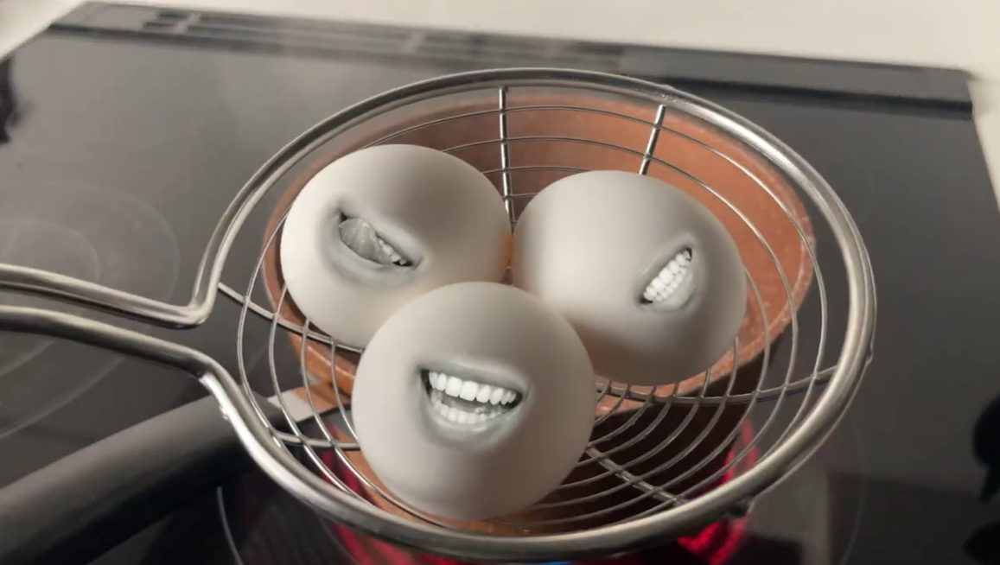
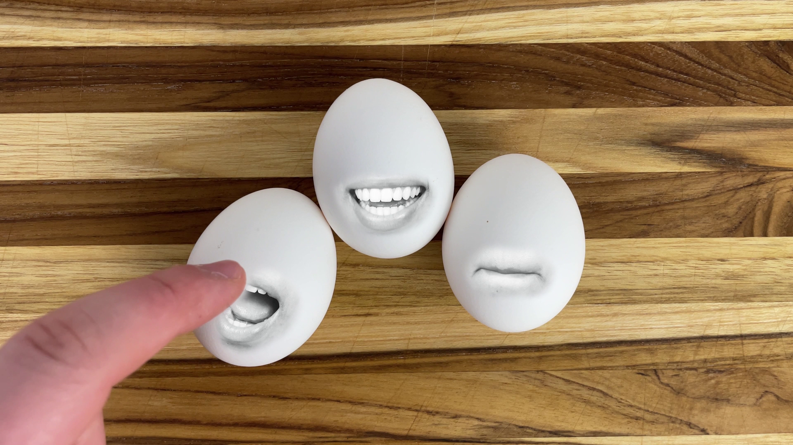

2024 / Experimental Video
Sentient Sandwich
A short experimental food video about making a sandwich with sentient ingredients.
- Premiere Pro
- After Effects
- iPhone 14

Overview
Project description
This humorous experimental video builds the lore of a fake reality where ingredients are sentient. All footage and sound were recorded by me, and the face composited onto the ingredients is Sarah Alexander.
The piece is inspired by Adventure Time and Eraserhead, and explores themes of identity and life cycle.
Final video
The completed experimental video.
